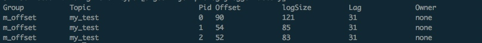

每次使用kafka都少不了需要用到这些命令,好记性不如烂笔头.
0. 在每台都启动kafka
./bin/kafka-server-start.sh config/server.properties >/opt/logs/kafka-serve &
1. 创建一个topic 分区数和复本数都是1
./bin/kafka-topics.sh --create --zookeeper ncp163:2181,ncp161:2181,ncp162:2181 --replication-factor 1 --partitions 1 --topic flume-kafka
2. 查看这个topic的信息
./bin/kafka-topics.sh --describe --zookeeper ncp163:2181,ncp161:2181,ncp162:2181 --topic flume-kafka
3. 查询所有可用的topic
./bin/kafka-topics.sh --list --zookeeper ncp163:2181,ncp161:2181,ncp162:2181
4. 修改topic 把分区数修改为3
./bin/kafka-topics.sh --alter --zookeeper ncp163:2181,ncp161:2181,ncp162:2181 --partition 3 --topic flume-kafka
5. 删除topic
bin/kafka-topics.sh --delete --zookeeper ncp163:2181,ncp161:2181,ncp162:2181 --topic flume-kafka
注意:flume-kafka只是被标记为删除了。kafka为了数据的安全，不允许随便删除数据。如果要完全删除，需要修改配置
vi config/server.propertiex 在这个文件的最后加上这句 delete.topic.enable=true
然后，停止kafka,再启动kafka服务。
6. 创建生产者 localhost:9092这个根据情况要修改
./bin/kafka-console-producer.sh --broker-list localhost:9092 --topic flume-kafka
7. 创建消费者
./bin/kafka-console-consumer.sh --zookeeper ncp163:2181,ncp161:2181,ncp162:2181 --topic flume-kafka --from-beginning
8. 查看topic的offset值
kafka-run-class kafka.tools.GetOffsetShell --broker-list 10.10.25.13:9092 --topic my_test
# --time -1 获取offset最大值
kafka-run-class kafka.tools.GetOffsetShell --broker-list 10.10.25.13:9092 --topic my_test --time -1
# --time -1 获取offset最小值
kafka-run-class kafka.tools.GetOffsetShell --broker-list 10.10.25.13:9092 --topic my_test --time -2
kafka-run-class kafka.tools.GetOffsetShell --broker-list 10.10.25.13:9092 --topic my_test
my_test:2:82
my_test:1:83
my_test:0:120
# 表示my_test这个topic的三个分区中,每个分区都指向了哪个offset
9. kafka消费者offset记录位置
查看某个主题的某个groupid的offset位置
kafka-consumer-offset-checker --zookeeper 10.10.25.14:2181 --group m_offset --topic my_test
